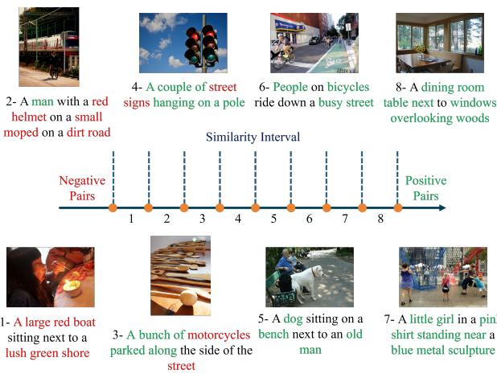

Figureure 2 · Overview of our proposed model: Image and text features first interactFigure 2. Overview of our proposed model: Image and text features first interact through the Hadamard product to generate similarity vector representations, which are then input into a variational adapter composed of an encoder and a decoder. The encoder predicts the mean (µ) and log-variance $( \log \sigma ^ { 2 } )$ for each similarity vector, mapping the input to a Gaussian mixture latent distribution, where each Gaussian component is regularized to a standard normal distribution. Using the reparameterization trick, latent variables are sampled and subsequently reconstructed into a similarity matrix by the decoder. The model is optimized by minimizing the reconstruction loss $( \mathcal { L } _ { r e c o n } )$ between the predicted similarities and the binary labels, while a distributional optimization loss $( \mathcal { L } _ { \sigma } )$ is introduced to adaptively calibrate the uncertainty of the latent representations.这张图概括 Variational Adapter for Cross-modal Similarity 的整体方法流程。阅读时先看模块之间传递的训练信号，再看作者如何把目标拆成可优化的子问题。

Figureure 1 · Image-text pairs with varying levels of similarityFigure 1. Image-text pairs with varying levels of similarity. We computed the similarity of 40,000 sample pairs from the COCO Caption dataset and divided them into eight intervals in ascending order. From each interval, we randomly selected one image-text pair for visual presentation.这张可视化用来解释 Variational Adapter for Cross-modal Similarity 学到的中间表征或对齐关系。重点看它是否支持正文里的机制判断。